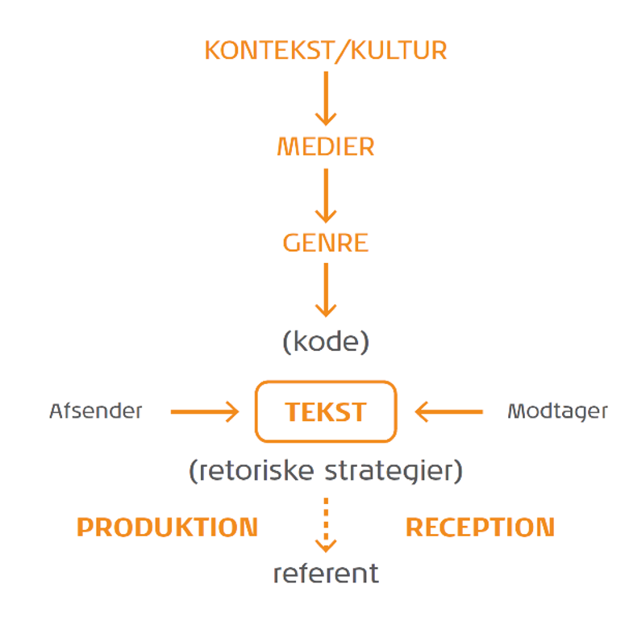
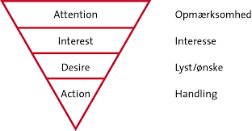
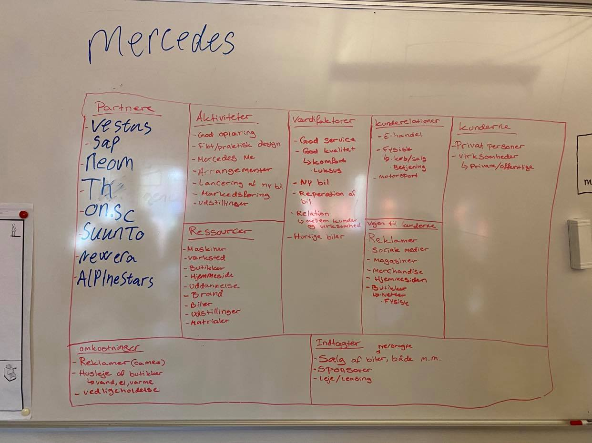
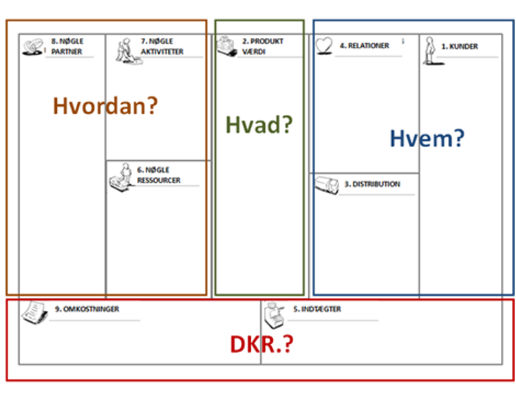
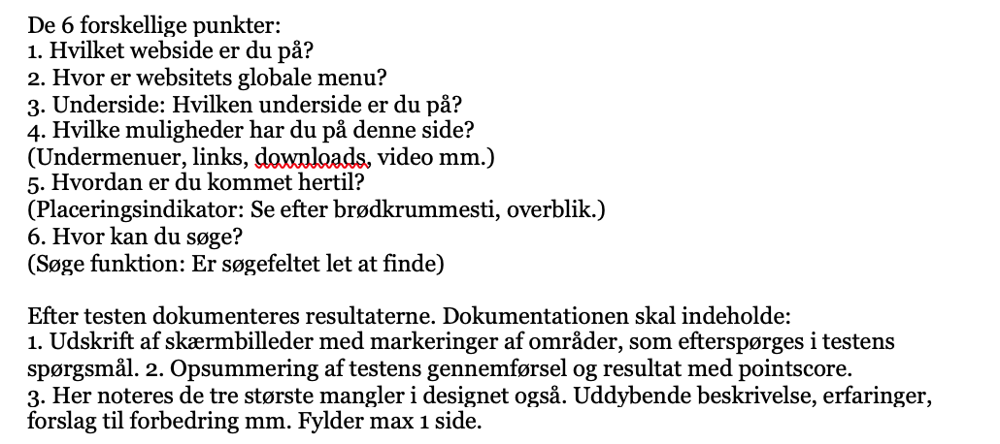
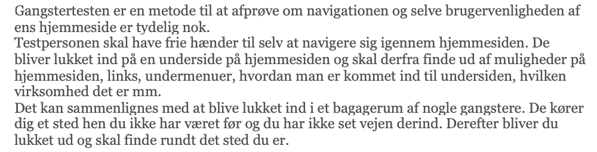
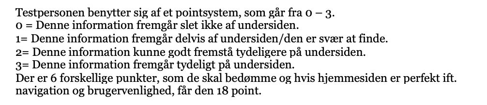
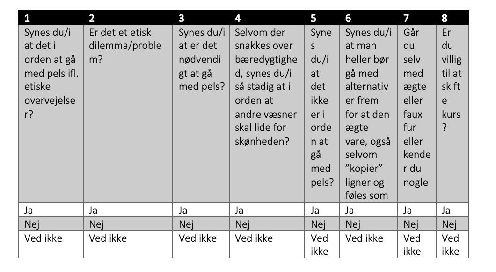

Grundlæggende kommunikationteori.
Man kan dele kommunikationsteorier ind i to forskellige paradigmer, selvom der er flere så er det primært kun to man bruger. Det er er et sæt af grundlæggende antagelser og måder for at forstå verden på, derfor tager man brug af paradigmerne.
De to paradigmer man primært bruger er det samfundsvidenskabelige og de humanistiske paradigme
Den humanistiske paradigme. For at kunne opbygge en viden for det humanistiske paradigme, så bliver man nødt til at anvende undersøgelsemetoder, det er for at kunne få en forståelse på hvad modtageren oplever. Inden for den humanistiske paradigme benytter man sig af kvalitative undersøgelser mens man i den samfundsvidenskabelige benytter sig af de kvantitaive.
Denne paradigme bliver også kaldet interaktionsparadigmet da den grundlæggende er optaget af interaktion mellem mennesker og opfatter et menneske som aktiv og behovsstyret, her i denne paradigme betragtes omverden som ustabil og er derfor uforudsigelig i modsat til det samfundvidenskabelige. Det der karakterisere denne paradigme er at den er subjektiv, fortolker, har en kvalitativ tilgang, er induktion, som betyder at den går efter konkrete observation og derefter teori. At der er situationsbestemt, og at modtageren bliver orienteret, der skal også være en interaktion mellem mennesker og at mennesket bliver set aktivt.


Det samfundsvidenskablige paradigme.
Inden for denne paradigme, så er der fokus på afsenderen og hvilken placering den har i omverden. Set traditionelt bliver der trækket på de samfundsvidenskabelige fagområder, i paradigmet så er det afsenderen der bliver set som den mest styrende inden for kommunikationsprocessen. I forhold til det humanistiske paradigme, så er det samfundsvidenskabelige mere overvejende karakteriseret, med en højere grad på at verden er forudsigelig og at man dermed kan planlægge med udgangspunkt i at stabilisere sine omgivelser og have en fast struktur. Endelig så bygger denne paradigme på at den der undersøger en sag, er selv i stand til at sætte sig selv i en objektiv position, hvor han eller hun ikke er den der er med til at påvirke en situation.
Denne paradigme arbejder med en hel del modeller og teorier, som gør at en kritiker kan gøre opmærksom på og har næsten op til 100% på bagen, inden for dette paradigme. De træk der er med til at karakterisere det samfundsvidenskabelige paradigme, er at den er objektiv, kommer med forklaring, har en kvantitativ tilgang, har en deduktion om tingene, at den går efter teori og derefter observere, går også en for stabile omgivelser, at afsenderen er orienteret, så er er der også transmission, der bliver taget handling og at modtageren er passiv.
Øvrige teorier inden for denne paradigme er at der findes en række væsnetlige og klassiske modeller som fx Shannon og Weavers positivistiske tilgang, dette er med til at fremstille kommuniaktion som en lineær proces som har fokus på på en aktiv afsender og med en antagelse om at passiv modtager.
BMC.
Virksomhedstyper. Den første er produktionsvirksomheder, dette er virksomheder der er med til at fremstille og forarbejde varer, derefter er der handelsvirksomheder, dette er hvor de køber og sælger varerene, den sidste er servicevirksomhed her, er det hvor de sælger uhåndgribelige varer eller tjenesteydelser, det er hvor varen eller ydelsen ikke kan lagres.
Der er noget som hedder en forretningsmodel, dette er et strategisk ledelsesværktøj og som kan anvendes til en strategisk analyse, en strategisk planlægning og en udvikling af virksomhedens forretningsmodel. Fx som multimediedesigner så er det vigtigt at man skal i gang med et projekt at der bliver lavet en overblik over forløbets start til slut. For kunne få en forståelse for en virksomhed, så er det vigtigt at vide hvor virksomheden ligger, altså by eller land, derefter skal finde ud af hvem er virksomheden hvad kan de gøre for hver enkelte person. Bagefter skal man finde ud af hvordan tænker den virksomhed man har valgt og undersøge, så skal man også vide hvor virksomheden vil hen med deres produkt, til sidst så er det vigtigt vide hvem denne virksomhed er skabt for, altså hvilken slags personer.
Et eksempel på hvordan man kan bruge BMC i praksis, der kan man tage en virksomhed som fx Mercedes. Som studerene så er det en god måde at øve sig på inden man er færdig uddannet som multimediedesigner. Det man også kan bruge BMC på er for eksempel hvis der er noget man gerne vil forbedre i sit firma, så er det en maget god idé at man laver nogle overordnede emner i hver deres felt eller kategori.


Usability - testmetoder
En af af testmetoderne er gangstertest, dette handler om hvad brugeren har til rådighed for at kunne finde rundt på et website, som er afhængig af at navigationen er i orden, ellers gør det sværer at få informationer omkring hvad websitet tilbyder. Der findes mange forskellige metoder at teste på, det er for at se hvor god og brugbar en navigation er på et website.
Dette er om gangstertest i brug. Dette er gangstertest.
Udførelse af denne test, er at man skal bruge en testdeltager, den kan fx blive udført hvis man sidder hvoran en skærm, men man kan også lave testen med at have simple tegninger af den udvalgte website. Denne form for test er meget simpel, da det kun er en underside af en website der udføre testen på.

Det første billede er et uddrag omkring hvordan man bruger denne metode.

Disse to billeder er screenshot fra linket til gangstertest dokumentet. De er med til at få en indblik i hvordan man kan lave denne test.
Det andet billede er om at man kan benytte sig af et pointsystem af en testperson. Dette er med til at give den der tester en indblik i hvad testpersonen synes om hjemmesiden, der bliver testet i.

Dette er lidt en anden form for test, og her kan man benytte sig af et spørgeskema. Det er hvor det går ud på at man laver nogle spørgsmål, helst ja nej spørgsmål, da det giver en bedre overblik over hvad testpersonener svare på.
Som testleder blev der forberedt på hvad der skulle undersøges og hvilket emne der skulle bruges, derefter bliver der så spurt fem testpersoner om hvad de mener om pelsning, om det er rigtigt eller forkert. Derefter blev der lavet et spørgeskema over nogle overordnede emner med otte forskellige spørgsmål hvor de havde tre svarmuligheder, eftersom der er blev brugt kvantitativ metode i forståelighed for bruger, hvor de også kunne se hjemmesiden der er blevet taget udgangspunkt i. Ud fra de testpersoner der er blevet spurgt, kan man se ud fra deres svar at mange af dem er stort set enige. Der er nogen af svarene som de fem der er blevet testet er enige, og så er der også nogen af svarene hvor de har forskellige holdninger. Hvilket er meget interessant at se da på eftersom om man går ind for at gå med pels eller gå med alternativ. Desuden kan man se mere end 50% af svarene er ens, hvilket er rigtigt godt eftersom et emne som fx pelsning er stort, at man stadigvæk kan se at hver testperson er enige eller uenige
Praktisk arbejde med usability.
Dette er omkring hvordan usability kan blive brugt, fx som multimediedesigner, så er det vigtigt at kunne arbejde med forskellige metoder inden kor kommenikation, derfor kan man lave fx en rapport over at have testet nogle forskellige mennesker.
Dette er et link til hvordan man kan bruge usability i praksis. Dette er en rapport om usability.
